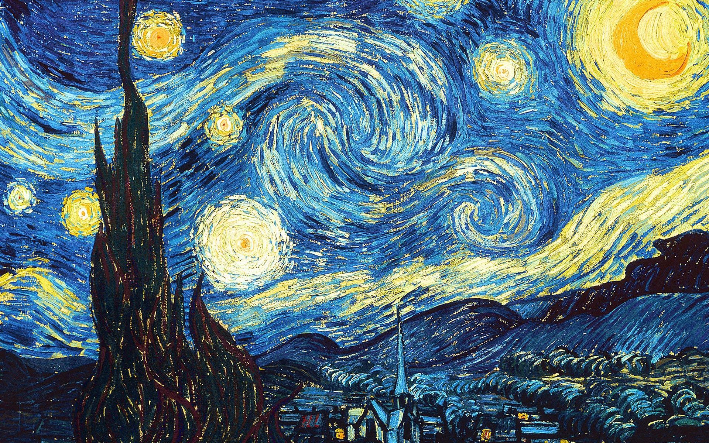

Vida y Obra del Impersionista Más Grande de la Historia
¡Disfruta de un poco de música mientras exploras la página o continúa navegando sin audio si lo prefieres!
OBRAS
La noche estrellada
(1889) Óleo sobre lienzo. 73.7 x 92.1 cm.
Este cuadro representa la vista desde la ventana orientada al este, de su habitación del asilo en Saint Rémy de-Provence, justo antes del amanecer, con la adición de un pueblo imaginario

Los Girasoles
(1888) Óleo sobre lienzo. 90 x 70 cm
De la serie hay tres cuadros similares con catorce girasoles en un jarrón, dos con doce girasoles, uno con tres y otro con cinco. Van Gogh pintó los primeros cuatro cuadros en agosto de 1888, cuando vivía en Arlés, en el sur de Francia, y otros tres similares en enero del año siguiente.


La Habitación en Arles
(1888) Óleo sobre lienzo. 70.5 x 90 cm
El cuadro representa el dormitorio del pintor durante su estancia en la ciudad francesa de Arlés, un motivo sobre el que pintó tres cuadros casi idénticos. El primero fue ejecutado en 1888. Cerca de un año después, emprendió la realización de dos copias: una se conserva hoy en el Art Institute de Chicago; la otra, en el Museo de Orsay
Autorretrato con la oreja vendada
(1889) Óleo sobre lienzo. 60.5 x 50 cm.
Aún con su estilo habitual de pinceladas vibrantes, Vincent se muestra calmado y sereno. Muy abrigado, ya que debía hacer frío ese invierno en la casita amarilla. Es curioso que aparezca el vendaje en la parte derecha de la cabeza, cuando el miembro amputado fue el izquierdo. Todo indica que el cuadro debió ser pintado delante de un espejo.


Autorretrato con sombrero de fieltro gris
(1887-1888) Óleo sobre lienzo. 44 x 37 cm.
Esta obra fue realizada durante la estancia de Van Gogh en París durante el invierno del 86 y el 87. El artista se empezaba a preparar por entonces para dedicarse al retrato, con la esperanza de que los encargos obtenidos solucionarían sus dificultades económicas. Pero el mercado del arte dedicado a este género estaba en crisis, ya que la fotografía lo estaba sustituyendo.
Calavera con un cigarrillo
(1885 1886) Óleo sobre lienzo. 32 x 24.5 cm.
Probablemente fue pintado en el invierno de 1885 1886 como una sátira sobre las prácticas académicas conservadoras. Antes de que fuera común usar humanos vivos como modelos, la rutina académica incluía el estudio de esqueletos para desarrollar una comprensión de la anatomía humana.
Retrato del cartero Joseph Roulin
(1889) Óleo sobre lienzo. 64 x 54,5 cm
Vincent realiza este retrato de su buen amigo Joseph con un fondo floreado, inspirado en la estampa japonesa. Su similitud con el retrato de su esposa conocido como La Berceuse puede hacer pensar que formarían pareja, situándose entre las obras más curiosas salidas de los pinceles de Van Gogh.
Terraza de café por la noche
(1888) Óleo sobre lienzo. 81 x 61.5 cm.
Es una pintura realizada en Arlés en septiembre de 1888 representando el ambiente de una terraza. En esta pintura, Van Gogh expresó sus nuevas impresiones de Francia meridional. La obra representa un café en la ciudad de Arlés, que en aquel entonces llamaba Café Terrace y que más tarde se renombró como Café Van Gogh .

El sembrador a la puesta del sol
(1888) Óleo sobre lienzo. 64 x 80.5 cm
El cuadro fue pintado en Provenza, donde el artista había ido en busca de una luz más fuerte. Las ropas del sembrador son de los mismos colores que la naturaleza que lo rodea, sin embargo, no está en el centro del cuadro, que es ocupado por el sol.
Retrato del doctor Félix Rey
(1889) Óleo sobre lienzo. 64 x 53 cm.
El retrato del doctor que le atendió tras su ingreso en el hospital de Arlés, tras seccionarse una oreja con una navaja barbera. El retrato es uno de los mejores del artista. Vuelve a recurrir a los tonos contrastantes y el contorno en negro, pero destacando la mirada profunda del médico y su gesto, pues Vincent siempre remarcaba la personalidad del retratado, siguiendo a sus admirados maestros holandeses barrocos.
REDES Y RESERVACIONES
¡Planea tu visita al Museo Van Gogh, en Ámsterdam, para conocer más sobre este grandioso artista!
 Van Gogh Museum
Van Gogh Museum
Van Gogh Museum
Van Gogh Museum
 Van Gogh Museum
Van Gogh Museum
Avisos de derechos de autor:

© Copyright 2015 – 2024 Vincent Van Gogh. Todos los derechos reservados. Todos los textos, imágenes, gráficos, pistas de sonido, video y datos de animación, así como su composición o diseño están protegidos por derechos de autor y otras leyes de protección. Su contenido no puede copiarse con fines comerciales ni de otro tipo, ni puede mostrarse, ni siquiera en una versión modificada, en otros sitios web.